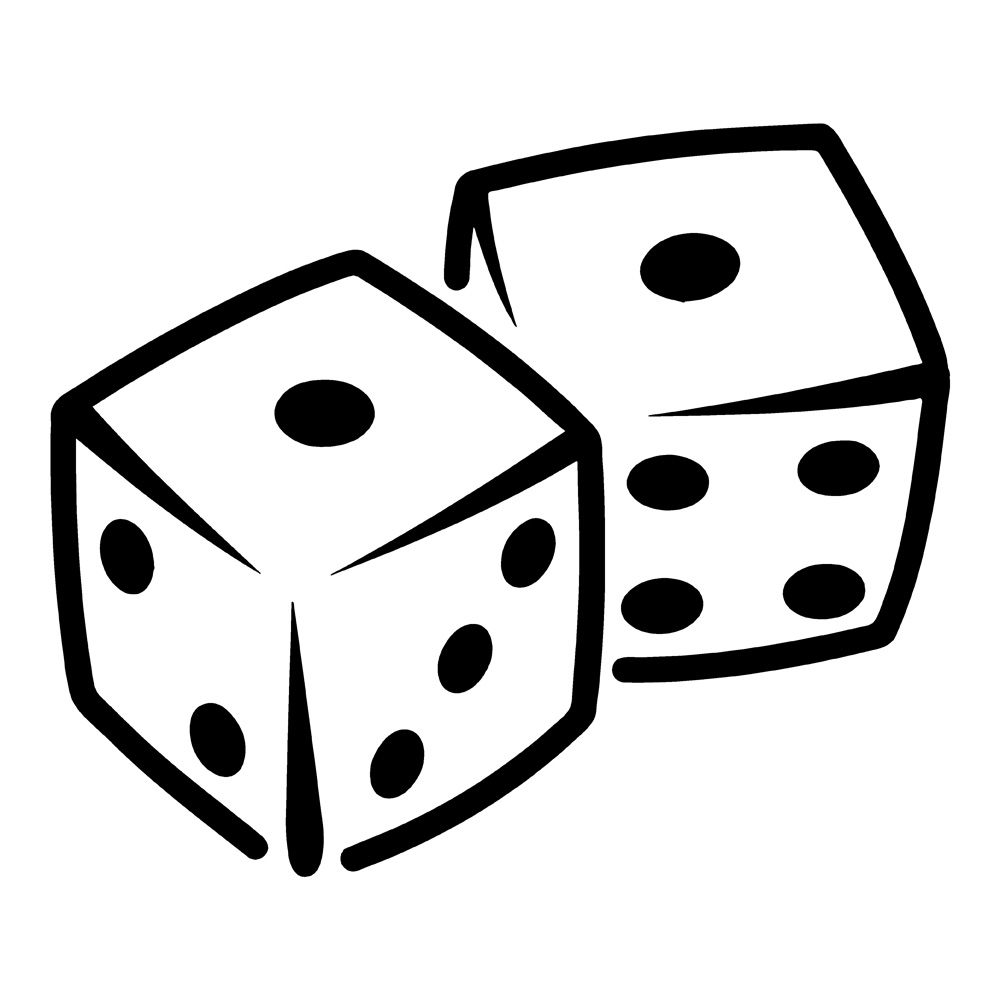

Life as Someone - LAS (Django, HTML, CSS, Javascript)
- Platform that provides a personal and realistic view of professional's life.
- Designed and constructed the website from ideation to implementation using Django as the primary backend server and HTML/CSS/Javscript for layout.

Book Search Website (HTMl, API, CSS, Javascript)
Implemented a book search website powered by utilizing a Google Books API.
Lock Manager (Java)
Created an API that processes objects sequentially in a database that follows the logic for table and page level locking as well as unlocking.

Tower Defense game: Ants (Python)
Combines functional and object-oriented programming pardigms essential for understanding and implementing programs.

Scheme (Python)
Designed and developed an interpreter for Scheme language primarily based on the Python language.

Bear Maps (Java)
- Back end of a webserver that uses real world mapping by combining
tile images and map features.
- Implemented a web API that parses through the URL and the parameters in order to generate the output via JSON.

Maps (Python)
- Finds the closest restuarants based on Yelp Database through the implementation of machine learning.
- Visualization (primarily through color) provides a predicted rating of the closest restaurant based on the given data.

Hog Dice Game in Python
A stimulator that computes strategies for the dice game where the objective is to be the first player to obtain 100 points.